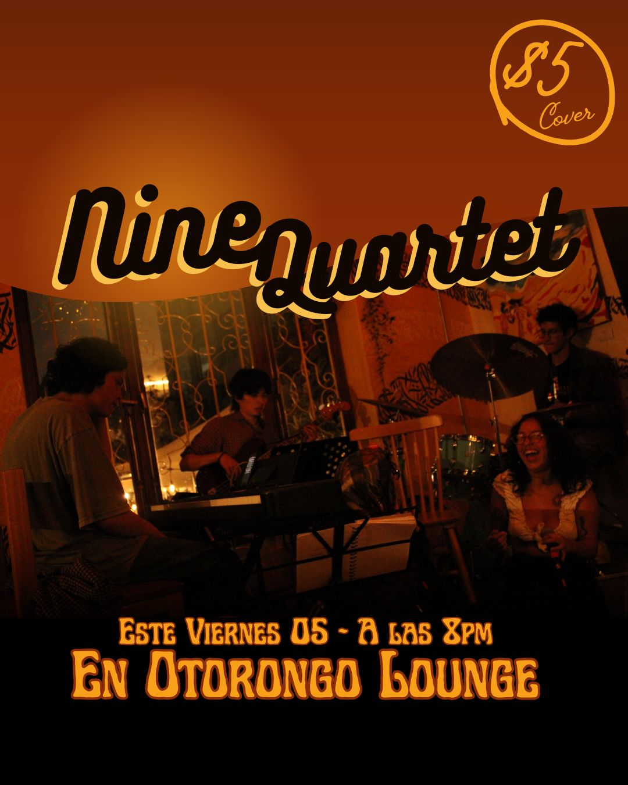

Existen fechas clave las cuales son importantes tener presentes, y un calendario físico facilita la organización y planificación diaria. Este proyecto nace como una respuesta a la dinámica académica de la USFQ, donde el primer semestre inicia en agosto y el segundo en enero. Por esta razón (y al haber ingresado en el primer semestre) diseñé este calendario adaptado, cuya nueva versión reúne todos los eventos oficiales del primer semestre 2026–2027, pensado como una herramienta clara y útil para la vida universitaria.